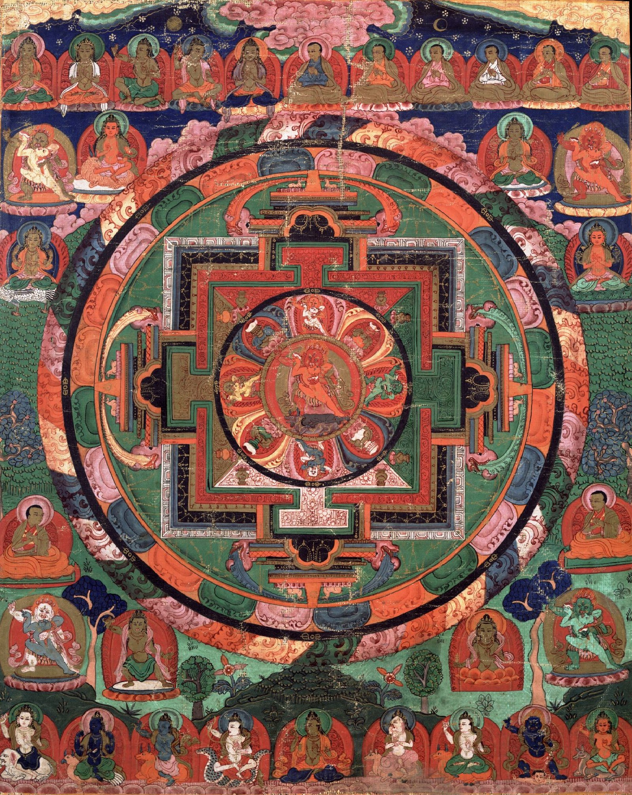
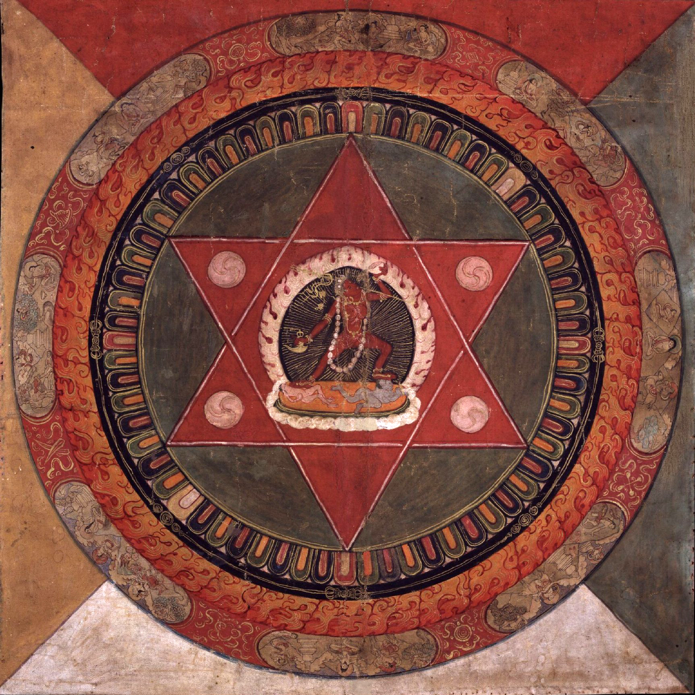

The mandala can be found in the form of the stupa and in the Atanatiya Sutta in the Digha Nikaya, part of the Pali Canon. This text is frequently chanted. Mandalas are traditionally found in large amounts in Buddhist Monasteries all over the world.One can also buy Mandalas and Thankas/Pauva in places like Thamel.
Tibetan Vajrayana
In the Tibetan branch of Vajrayana Buddhism, mandalas have been developed into sandpainting. They are also a key part of Anuttarayoga Tantra meditation practices.

Painted 17th century Tibetan 'Five Deity Mandala', in the centre is Rakta Yamari (the Red Enemy of Death) embracing his consort Vajra Vetali, in the corners are the Red, Green White and Yellow Yamaris, Rubin Museum of Art
Visualisation of Vajrayana teachings
The mandala can be shown to represent in visual form the core essence of the Vajrayana teachings. The mind is "a microcosm representing various divine powers at work in the universe." The mandala represents the nature of the Pure Land, Enlightened mind.
While on the one hand, the mandala is regarded as a place separated and protected from the ever-changing and impure outer world of samsara, and is thus seen as a "Buddhafield" or a place of Nirvana and peace, the view of Vajrayana Buddhism sees the greatest protection from samsara being the power to see samsaric confusion as the "shadow" of purity (which then points towards it).
Mount Meru
A mandala can also represent the entire universe, which is traditionally depicted with Mount Meru as the axis mundi in the center, surrounded by the continents.
Wisdom and impermanence
In the mandala, the outer circle of fire usually symbolises wisdom. The ring of eight charnel grounds[15] represents the Buddhist exhortation to be always mindful of death, and the impermanence with which samsara is suffused: "such locations were utilized in order to confront and to realize the transient nature of life."[16] Described elsewhere: "within a flaming rainbow nimbus and encircled by a black ring of dorjes, the major outer ring depicts the eight great charnel grounds, to emphasize the dangerous nature of human life." Inside these rings lie the walls of the mandala palace itself, specifically a place populated by deities and Buddhas.
Five Buddhas
One well-known type of mandala is the mandala of the "Five Buddhas", archetypal Buddha forms embodying various aspects of enlightenment. Such Buddhas are depicted depending on the school of Buddhism, and even the specific purpose of the mandala. A common mandala of this type is that of the Five Wisdom Buddhas (a.k.a. Five Jinas), the Buddhas Vairocana, Aksobhya, Ratnasambhava, Amitabha and Amoghasiddhi. When paired with another mandala depicting the Five Wisdom Kings, this forms the Mandala of the Two Realms.
Sandpainting showing Buddha mandala which is made as part of the death rituals among Buddhist Newars of Nepal.
Practice
Mandalas are commonly used by tantric Buddhists as an aid to meditation.
The mandala is "a support for the meditating person", something to be repeatedly contemplated to the point of saturation, such that the image of the mandala becomes fully internalised in even the minutest detail and can then be summoned and contemplated at will as a clear and vivid visualized image. With every mandala comes what Tucci calls "its associated liturgy [...] contained in texts known as tantras", instructing practitioners on how the mandala should be drawn, built and visualised, and indicating the mantras to be recited during its ritual use.
By visualizing "pure lands", one learns to understand experience itself as pure, and as the abode of enlightenment. The protection that we need, in this view, is from our own minds, as much as from external sources of confusion. In many tantric mandalas, this aspect of separation and protection from the outer samsaric world is depicted by "the four outer circles: the purifying fire of wisdom, the vajra circle, the circle with the eight tombs, the lotus circle." The ring of vajras forms a connected fence-like arrangement running around the perimeter of the outer mandala circle.

Tantric mandala of Vajrayogini
As a meditation on impermanence (a central teaching of Buddhism), after days or weeks of creating the intricate pattern of a sand mandala, the sand is brushed together into a pile and spilled into a body of running water to spread the blessings of the mandala.
Kværne in his extended discussion of sahaja, discusses the relationship of sadhana interiority and exteriority in relation to mandala thus:
...external ritual and internal sadhana form an indistinguishable whole, and this unity finds its most pregnant expression in the form of the mandala, the sacred enclosure consisting of concentric squares and circles drawn on the ground and representing that adamant plane of being on which the aspirant to Buddha hood wishes to establish himself. The unfolding of the tantric ritual depends on the mandala; and where a material mandala is not employed, the adept proceeds to construct one mentally in the course of his meditation."
Offerings
A "mandala offering" in Tibetan Buddhism is a symbolic offering of the entire universe. Every intricate detail of these mandalas is fixed in the tradition and has specific symbolic meanings, often on more than one level.
Whereas the above mandala represents the pure surroundings of a Buddha, this mandala represents the universe. This type of mandala is used for the mandala-offerings, during which one symbolically offers the universe to the Buddhas or to one's teacher. Within Vajrayana practice, 100,000 of these mandala offerings (to create merit) can be part of the preliminary practices before a student even begins actual tantric practices. This mandala is generally structured according to the model of the universe as taught in a Buddhist classic text the Abhidharma-kośa, with Mount Meru at the centre, surrounded by the continents, oceans and mountains, etc.
Shingon Buddhism
One Japanese branch of Mahayana Buddhism—Shingon Buddhism—makes frequent use of mandalas in its rituals as well, though the actual mandalas differ. When Shingon's founder, Kukai, returned from his training in China, he brought back two mandalas that became central to Shingon ritual: the Mandala of the Womb Realm and the Mandala of the Diamond Realm.
These two mandalas are engaged in the abhiseka initiation rituals for new Shingon students, more commonly known as the Kechien Kanjō (結縁灌頂). A common feature of this ritual is to blindfold the new initiate and to have them throw a flower upon either mandala. Where the flower lands assists in the determination of which tutelary deity the initiate should follow.
Sand mandalas, as found in Tibetan Buddhism, are not practiced in Shingon Buddhism.
Chenrezig sand mandala created at the House of Commons of the United Kingdom on the occasion of the Dalai Lama's visit in May 2008
Nichiren Buddhism
The Mandala in Nichiren Buddhism is called a moji-mandala (文字曼陀羅) and is a paper hanging scroll or wooden tablet whose inscription consists of Chinese characters and medieval-Sanskrit script representing elements of the Buddha's enlightenment, protective Buddhist deities, and certain Buddhist concepts. Called the Gohonzon, it was originally inscribed by Nichiren, the founder of this branch of Japanese Buddhism, during the late 13th Century. The Gohonzon is the primary object of veneration in some Nichiren schools and the only one in others, which consider it to be the supreme object of worship as the embodiment of the supreme Dharma and Nichiren's inner enlightenment. The seven characters Namu Myōhō Renge Kyō, considered to be the name of the supreme Dharma, as well as the invocation that believers chant, are written down the center of all Nichiren-sect Gohonzons, whose appearance may otherwise vary depending on the particular school and other factors.
Pure Land Buddhism
Mandalas have sometimes been used in Pure Land Buddhism to graphically represent Pure Lands, based on descriptions found in the Larger Sutra and the Contemplation Sutra. The most famous mandala in Japan is the Taima Mandala, dated to approximately 763 CE. The Taima Mandala is based upon the Contemplation Sutra, but other similar mandalas have been made subsequently. Unlike mandalas used in Vajrayana Buddhism, it is not used as an object of meditation or for esoteric ritual. Instead, it provides a visual representation of the Pure Land texts, and is used as a teaching aid
Also in Jodo Shinshu Buddhism, Shinran and his descendant, Rennyo, sought a way to create easily accessible objects of reverence for the lower-classes of Japanese society. Shinran designed a mandala using a hanging scroll, and the words of the nembutsu (南無阿彌陀佛) written vertically. This style of mandala is still used by some Jodo Shinshu Buddhists in home altars, or butsudan.